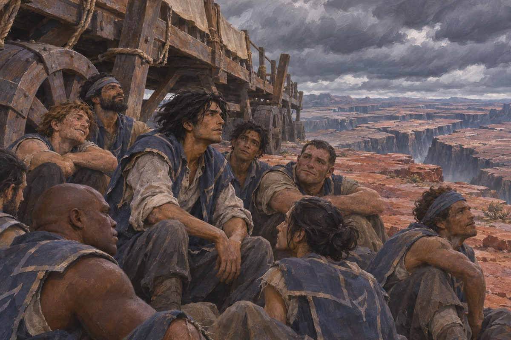
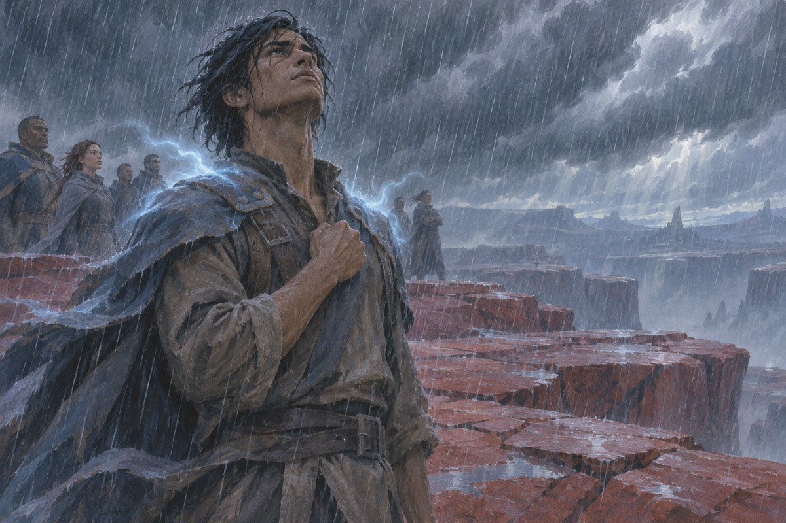
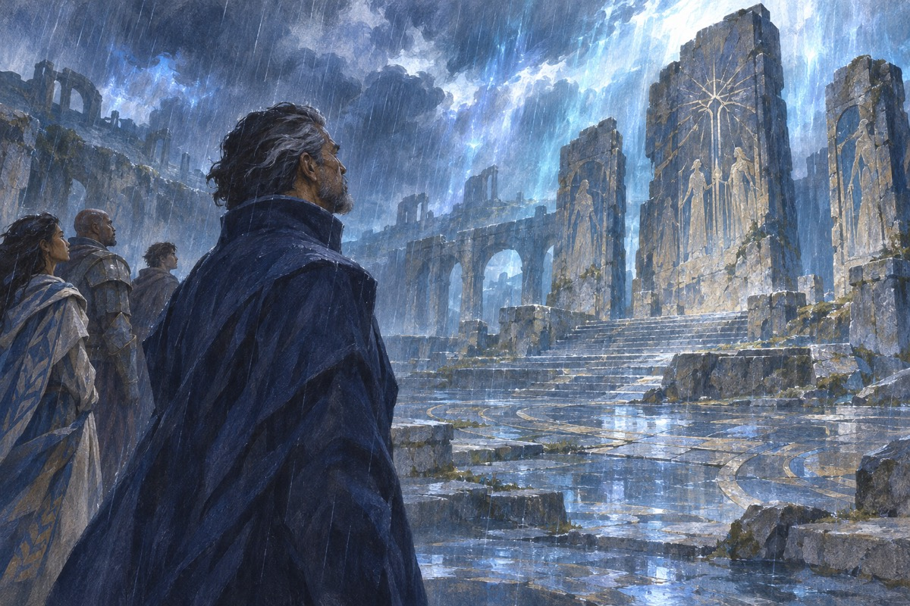
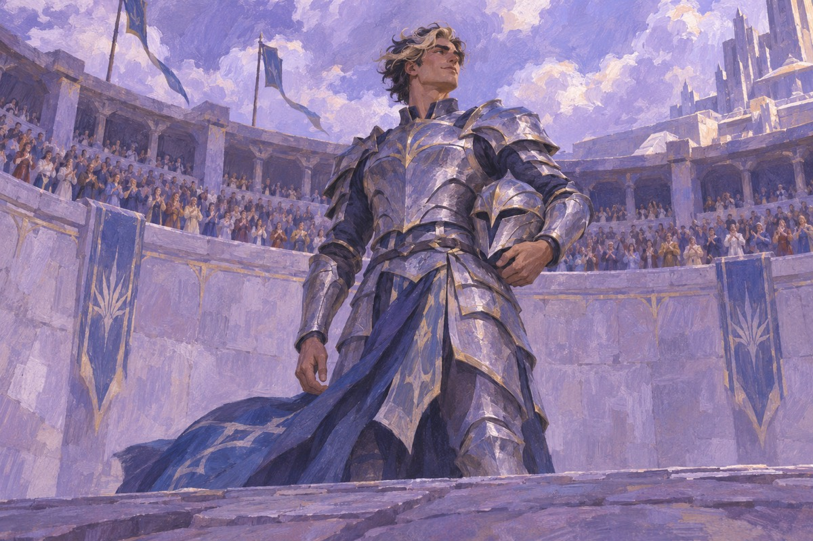
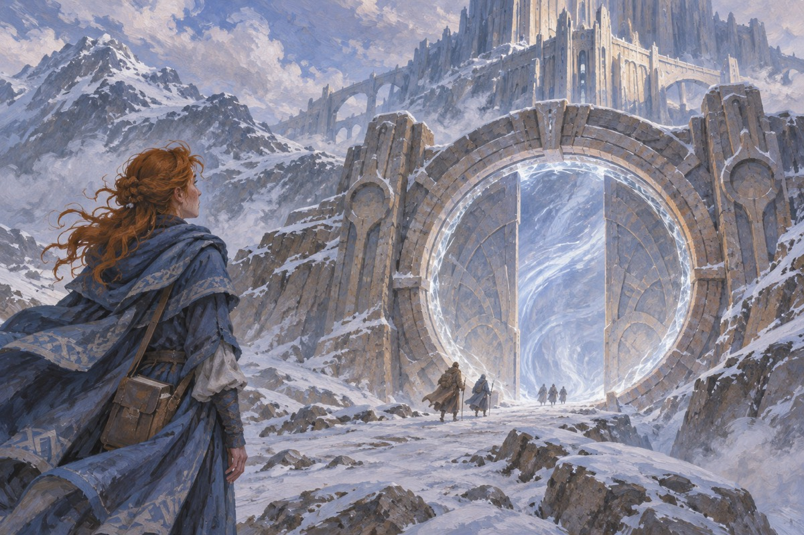

白衣刺客刺杀加维拉
阿勒希与帕山迪缔约的当晚，帕山迪派赛兹刺杀国王加维拉。赛兹以荣誉之刃施展重力术完成刺杀。他受持有誓石者的命令约束，后来继续被人用作刺客。加维拉之死令阿勒希诸亲王对帕山迪发起复仇战争。
出处 · 《王道》序章〈杀戮〉
卡拉丁沦为桥夫
军医之子卡拉丁为了保护被征召的弟弟提恩而随军。提恩战死后，他仍在军中保护同袍。他杀死一位碎剑士后拒绝领取碎片，统帅阿玛兰杀死他剩下的部下，夺走碎片并将他卖作奴隶。卡拉丁辗转来到破碎平原，被编入萨迪亚斯的桥队。
出处 · 《王道》第1–2、27、47、51章
桥四开始互助
桥夫抬着重桥在箭雨下冲向沟壑，伤亡频繁。卡拉丁接手桥四，带队训练并照料伤员，让原本只求熬过下一趟冲锋的人互相照应。尝试改变抬桥方式招来惩罚；他后来利用帕山迪对死者遗体的禁忌分散敌人的火力。
出处 · 《王道》桥四线，第40、55、59–62章

沙兰拜加斯娜为师
为了挽救家族，沙兰来到卡拉布兰斯，请求成为加斯娜的学生，并打算偷换她的魂铸器。加斯娜收下她，让她在学术训练中逐渐接触魂铸与虚空使者的研究。沙兰最后承认偷换一事，得知加斯娜并不依靠那个装置施术，并开始和她继续研究。
出处 · 《王道》第3、7、8、45–48、74章

达力拿在强风暴中看见幻象
达力拿每逢强风暴便进入异象，看见昔日的光辉骑士和灾变留下的痕迹。他从反复出现的呼吁中理解到团结的重要，试图改变亲王各自抢夺宝石心的战争方式。营中人把他在暴风中的行为视为失态，阿多林也曾忧心父亲的判断。
出处 · 《王道》第12、19、52章
从第一次理想到救援
卡拉丁先在桥队的经历中接触所有光辉骑士共有的第一理想。萨迪亚斯在塔地抛下达力拿的部队时，原可逃走的桥四回身救援。卡拉丁在战斗中说出风行者保护无力自保者的第二理想；达力拿后来用自己的碎刃换取萨迪亚斯手中的桥夫。
出处 · 《王道》第59、67–69章

达力拿得知幻象是谁留下的
塔地脱险后，达力拿继续面对尚未解开的幻象。发出讯息的荣誉神显出身份，向他解释这些影像早已留下，无法与观看者对话，也预告了将再度到来的灾变。达力拿把团结亲王与重建光辉骑士的前景联系起来。
出处 · 《王道》第75章

加斯娜在海上遇刺
加斯娜和沙兰乘船前往破碎平原，途中遭刺客袭击。沙兰看见加斯娜中刀，一度以为她已死，独自逃生并继续研究。尾声中，加斯娜从另一界归来遇到智者，读者才确认她活了下来。
出处 · 《光辉真言》第7章、尾声
阿多林以一敌四
阿多林接受一场以碎片为赌注的决斗，却被多名持碎片的对手围攻。雷纳林和卡拉丁先后参战，战局才逆转。卡拉丁随后借胜利公开要求向阿玛兰决斗，遭国王惩处，也使阿多林原本借机挑战萨迪亚斯的计划落空。
出处 · 《光辉真言》第56–58章

沙兰在营地继续调查
加斯娜遇袭后，沙兰带着老师留下的学术线索前往破碎平原。她在那里同阿多林发展婚约，并用另一个身份接触鬼血会，试图了解对方与加斯娜的关系。同时，她继续研究破碎平原和失落的乌瑞希鲁之间的联系，为在纳拉克寻找誓门准备线索。
出处 · 《光辉真言》卷二中段 · 沙兰会见鬼血会、研究平原
卡拉丁的第三理想
卡拉丁一度赞同莫阿什除掉国王艾洛卡。莫阿什动手时，卡拉丁重新面对保护他人的责任，选择救下自己并不喜欢的国王，并说出风行者的第三理想。与希尔的联系得以恢复，他才能赶去支援纳拉克。
出处 · 《光辉真言》第80–84章
两道风暴在纳拉克交汇
听众变为风暴形态并召来永恒风暴，达力拿率领的部队面临两股风暴夹击。卡拉丁在风暴间迎战赛兹，赛兹坠落，决斗告终。地面上的沙兰同时在纳拉克寻找能把军队带离战场的誓门。
出处 · 《光辉真言》第83–86章；赛兹一段采用修订版经过

沙兰开启誓门
沙兰在纳拉克辨认出誓门，用纹的碎刃形态启动装置。门台上的人员由破碎平原转移至乌瑞希鲁，达力拿的军队由此避开风暴。失落城市从加斯娜研究中的线索变为阿勒希人可进驻的据点。
出处 · 《光辉真言》第86–87章
新盟约与新的裂痕
达力拿向风暴之父立誓，成为缚盟者。阿多林私下杀死萨迪亚斯，打破了军中公开维持的政治秩序。赛兹获纳兰复活，随后才得到夜血。沙兰与阿多林仍处于婚约阶段，二人的婚礼属于下一卷。
出处 · 《光辉真言》第87–89章